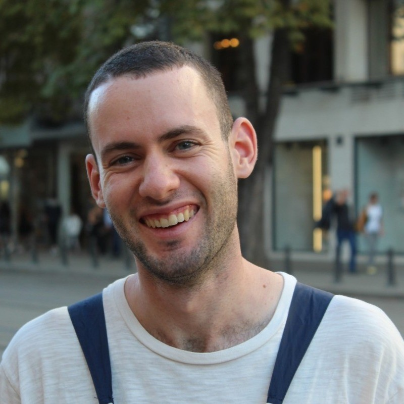
Matan Kleiner
I am a PhD candidate at the Electrical and Computer Engineering department of the Technion, under the supervission of Prof. Tomer Michaeli.
My research interests lie at the intersection of optics, computational imaging, computer vision and deep learning. I am exploring various theoretical aspects of optical computing, a promising paradigm that combines deep learning and photonics. Additionally, I am interested in the imaging pipeline, from accurately capturing objects in the physical world as images and videos to editing and manipulating them using vision foundation models.
Contact me at matan dot kleiner at campus dot technion dot ac dot il.
Publications
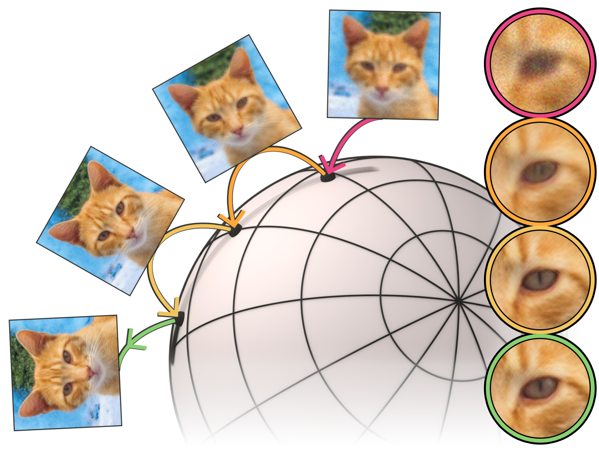
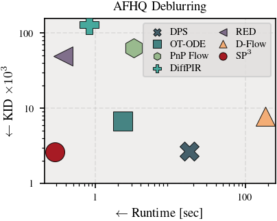
SP3: Spherical Priors for Plug-and-Play Restoration Sean Man, Ron Raphaeli*, Matan Kleiner*, Or Ronai Preprint 2026
SP3 is a plug-and-play restoration with Spherical Encoders as generative priors, enabling stable anytime results with perceptual quality comparable to zero-shot diffusion and flow methods while running 3-630x faster.
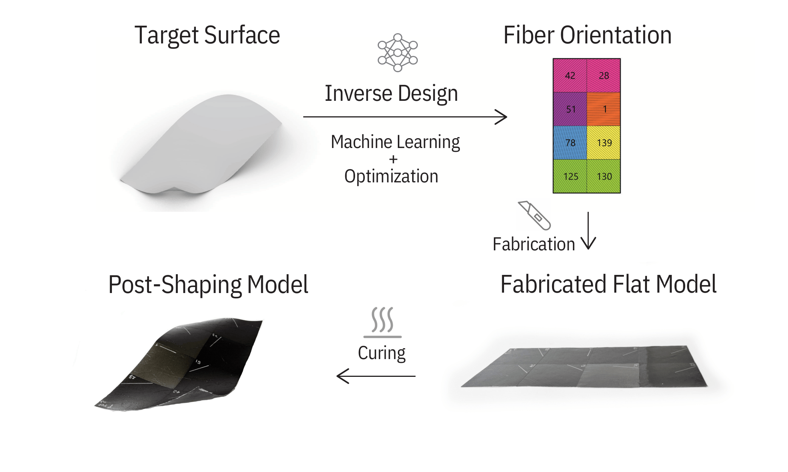
Neural Inverse Design of Self Shaping Composites Gal Kapon, Arielle Blonder, Matan Kleiner, Tomer Michaeli, Guy Austern Materials & Design 2026
We introduce a data-driven approach for the inverse design of self-shaping fiber-reinforced polymer sheets, leveraging a large synthetic dataset generated from physically informed simulations.
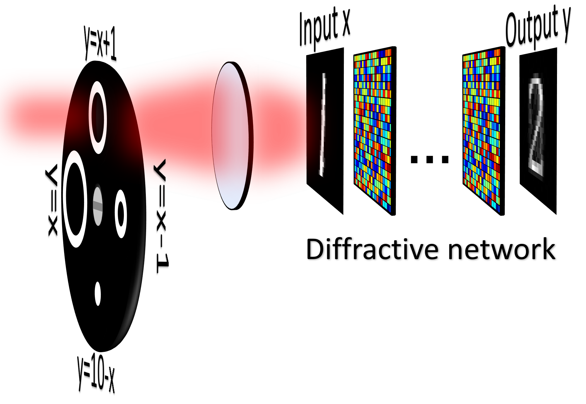
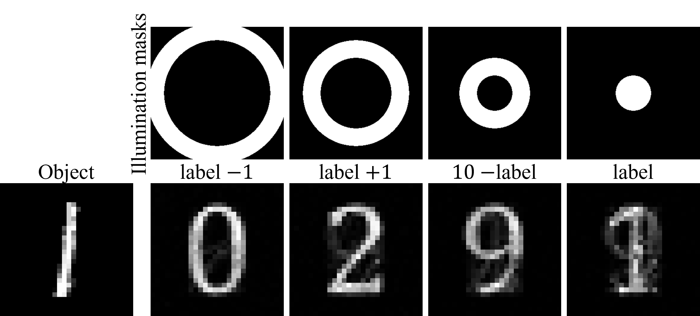
Illumination Angular Spectrum Encoding for Controlling the Functionality of Diffractive Networks Matan Kleiner, Lior Michaeli, Tomer Michaeli Preprint 2026 Presented as an oral presentation at CLEO 2026
Diffractive networks are typically trained for a single task, limiting their potential adoption in systems requiring multiple functionalities. We propose a new control mechanism, based on the illumination's angular spectrum, where we shape the illumination using an amplitude mask that selectively controls its angular components.
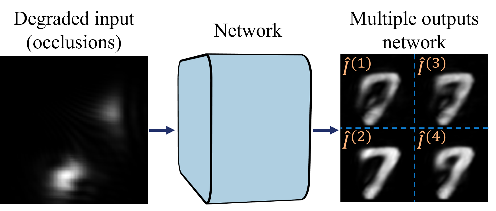
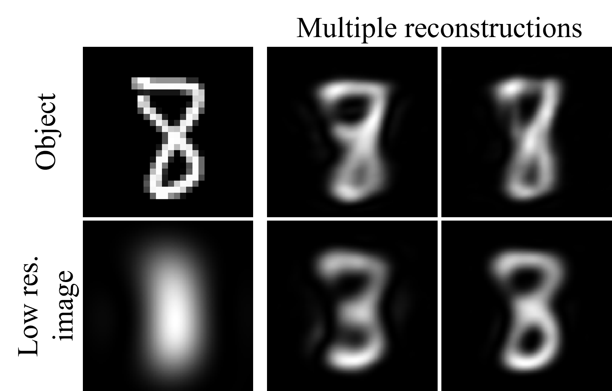
All-optical uncertainty visualization for ill-posed image restoration tasks Matan Kleiner, Tomer Michaeli Optics Letters 2026 Presented as an oral presentation at CLEO 2026
Existing diffractive network designs for image restoration output only a single reconstruction for each input image, and thus do not inform the user of the inherent uncertainty in the reconstruction. We explore a diffractive network architecture that simultaneously output multiple plausible reconstructions for each input image, provides a highly informative visualization of the uncertainty in the reconstruction.

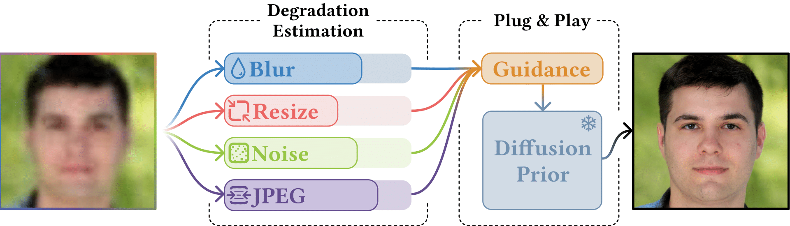
ELAD: Blind Face Restoration using Expectation-based Likelihood Approximation and Diffusion Prior Sean Man, Guy Ohayon, Ron Raphaeli, Matan Kleiner, Michael Elad SIGGRAPH Asia 2025
We propose a novel approach to blind face restoration using a degradation estimator, expectation-based likelihood approximation, and diffusion prior.
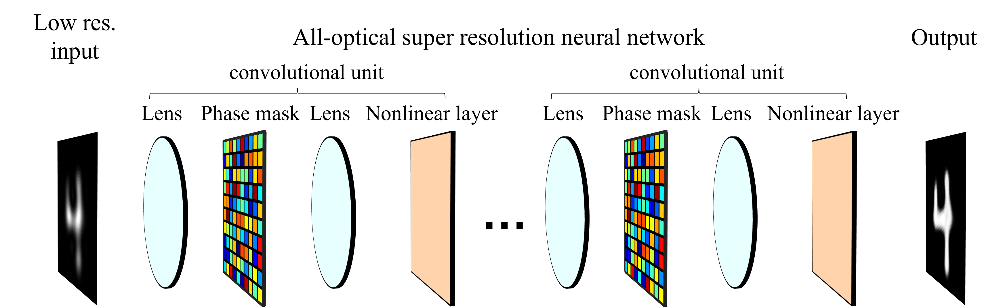
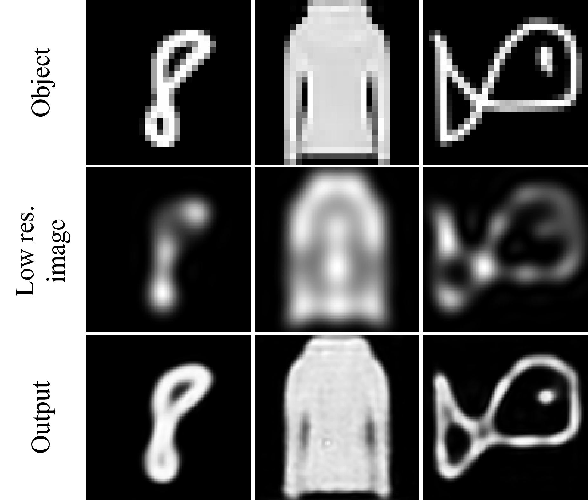
Can the Success of Digital Super-Resolution Networks Be Transferred to Passive All-Optical Systems? Matan Kleiner, Lior Michaeli, Tomer Michaeli Nanophotonics 2025 Presented as an oral presentation at CLEO 2025
We find that passive, phase-only, and nonlinear all-optical super-resolution networks face two key challenges: (i) a tradeoff between reconstruction fidelity and energy preservation, and (ii) a limited dynamic range of input intensities that can be effectively processed.

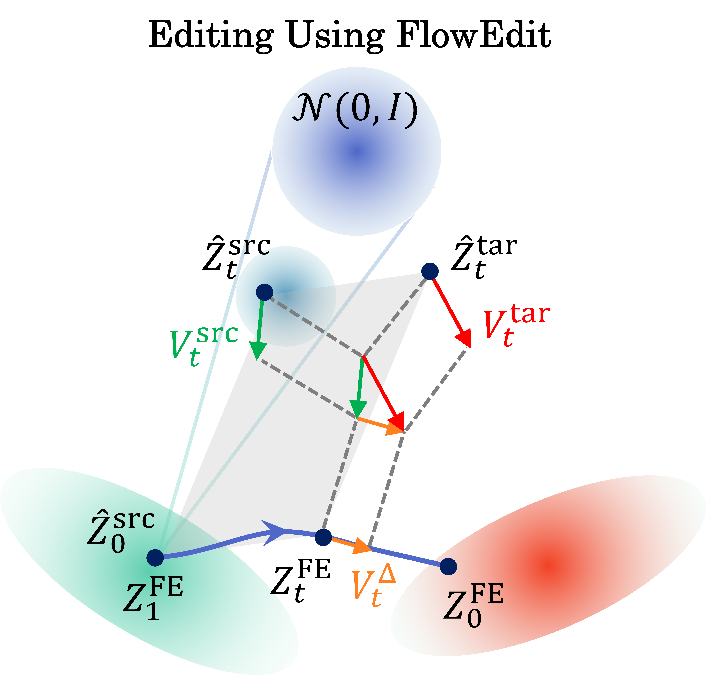
FlowEdit: Inversion-Free Text-Based Editing Using Pre-Trained Flow Models Vladimir Kulikov, Matan Kleiner, Inbar Huberman-Spiegelglas, Tomer Michaeli ICCV 2025 Best Student Paper Award
FlowEdit is a text-based editing method for pre-trained T2I flow models, which is inversion-free, optimization-free and model agnostic. FlowEdit constructs an ODE that directly maps between the source and target distributions, leading to SOTA results.
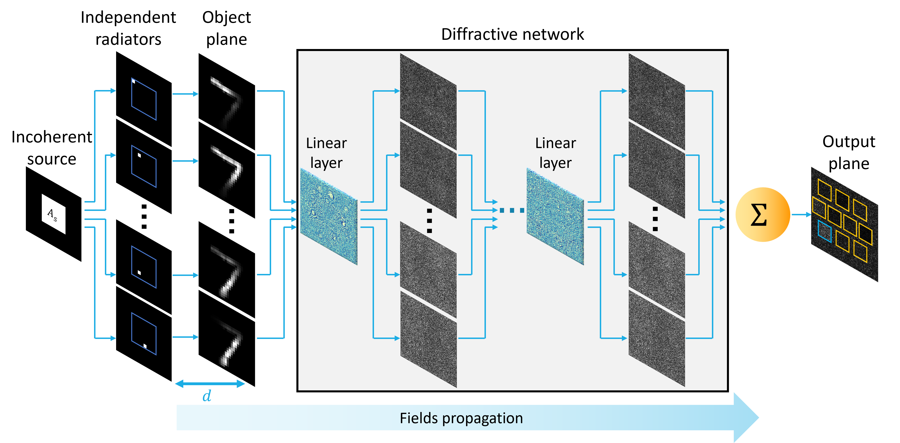
Coherence Awareness in Diffractive Neural Networks Matan Kleiner, Lior Michaeli, Tomer Michaeli Laser & Photonics Reviews 2025 Presented as an oral presentation at CLEO 2024
We illustrate that, as opposed to imaging systems, the degree of spatial coherence has a dramatic effect in diffractive networks. Following this observation, we propose a general framework for training diffractive networks for any specified degree of spatial and temporal coherence.
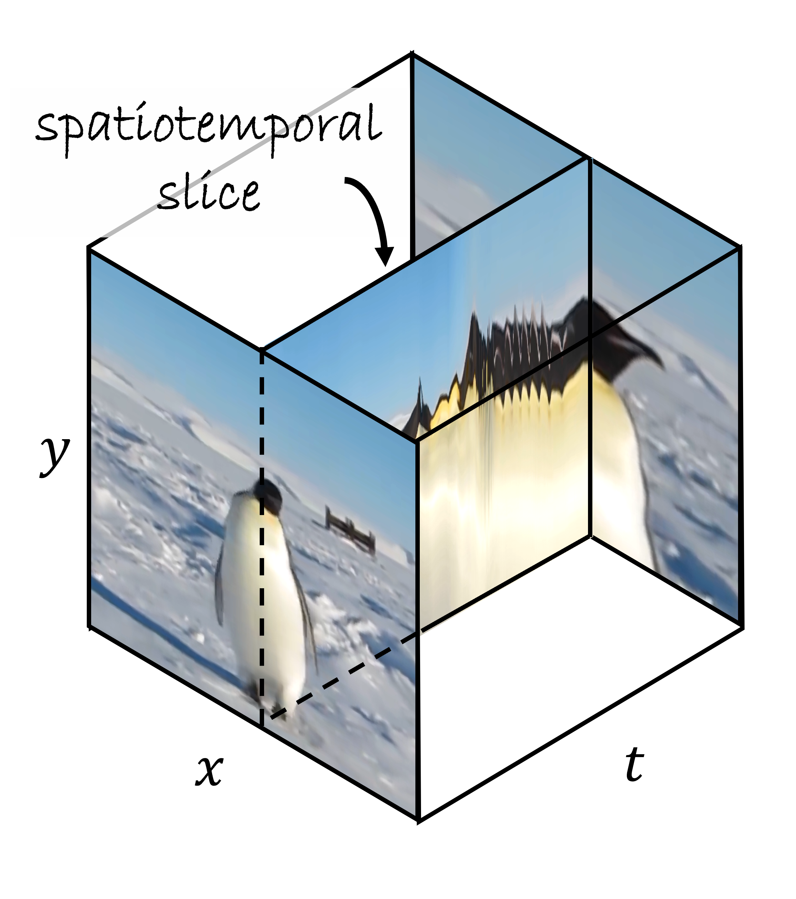
Slicedit: Zero-Shot Video Editing With Text-to-Image Diffusion Models Using Spatio-Temporal Slices Nathaniel Cohen*, Vladimir Kulikov*, Matan Kleiner*, Inbar Huberman-Spiegelglas, Tomer Michaeli ICML 2024 Presented as an oral presentation at the CVG workshop @ ICML 2024
Slicedit is a method for text-based video editing that utilizes a pre-trained T2I diffusion model and spatiotemporal slices.
SinDDM: A Single Image Denoising Diffusion Model Vladimir Kulikov, Shahar Yadin*, Matan Kleiner*, Tomer Michaeli ICML 2023
SinDDM is a framework for training a diffusion model on a single image. SinDDM learns the internal statistics of the training image by using a multi-scale diffusion process, generates diverse high-quality samples, and it can be easily guided by external supervision, such as CLIP model.